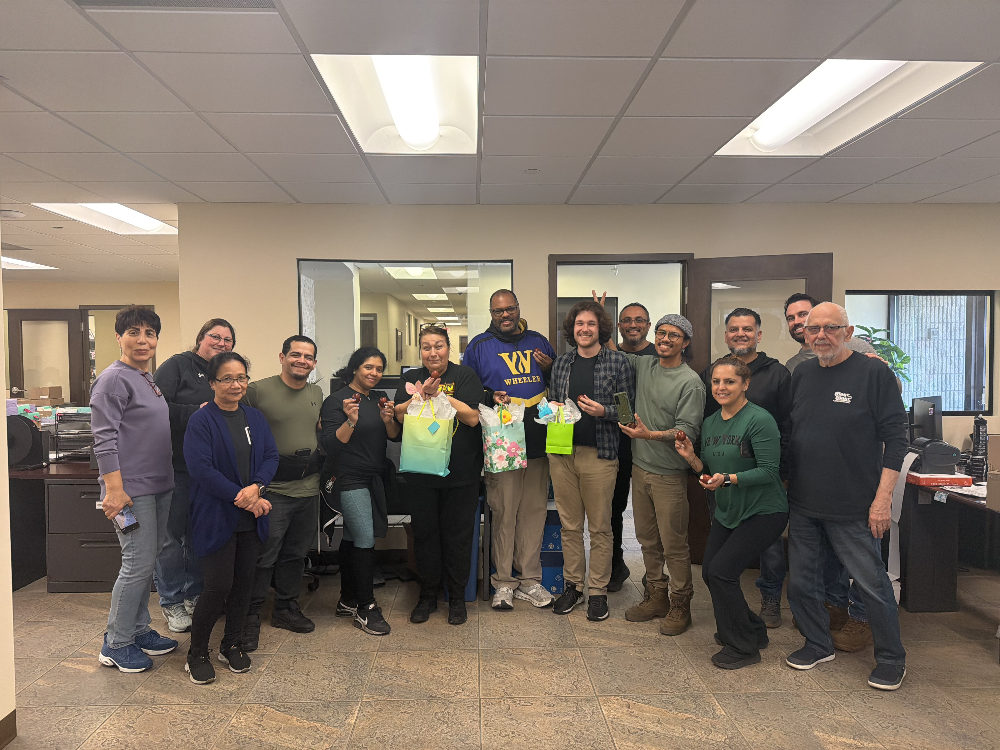
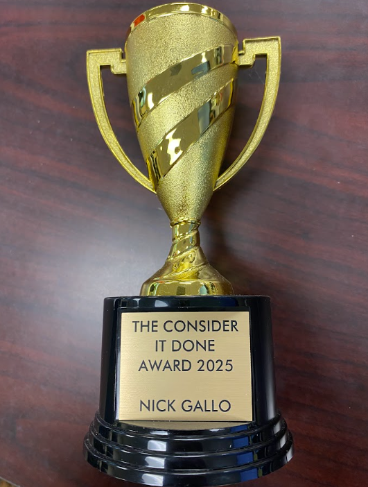

With a background in technology, design, and program management, I've spent my career making leaders more effective.
Need a last-minute slide deck that actually looks polished? An automated script to generate expense reports? Or someone to lead a 7 a.m. standup and keep projects moving?
Whatever the challenge, I’m the person who makes sure it gets it done efficiently and effectively.
Under my second internship with Johnson Controls, I joined the Program Management team to gain a deeper understanding of the planning, coordination, and deliverables required to successfully drive project execution. I led weekly standups, managed cross-functional timelines, and supported the Program Manager with the resources needed to keep teams aligned and projects on schedule.
My first position at Johnson Controls tasked me with developing an automated testing framework for web-based applications. I researched automation frameworks, presented implementation proposals to leadership, and designed a UI testing strategy for integration into the development pipeline. By the end of my internship, I had authored extensive implementation documentation, developed the first batch of automated test cases to prove the concept, and participated in interview panels to help evaluate candidates for automated QA roles.

My primary responsbility is simple... support Marketing leadership. This includes creating and managing content calendars, preparing presentations and press kits, coordinating employee events, and making sure any artifact needed for client outreach is constructed efficiently and professionally. I facilitate weekly standups, assign priorities for marketing tasks, and manage deliverables to completion.
We’re responsible for delivering over 10 million units per year, and the data entry required to support that volume can become… tedious. Working closely with various teams, I help identify opportunities for process automation and design solutions that improve efficiency. I identified a manual monthly reconciliation process for the Accounting team and built an automated workflow that replaced it entirely. What once took hours of manual work can now be delivered instantly. I have a habit of finding things that shouldn't be manual and making them not manual.
I serve as the liaison between leadership and our engineering team for our digital reporting portal, translating requests into clear technical requirements. I document feature requests, bug fixes, and platform updates from leadership, and coordinate execution across teams to ensure the final product aligns with leadership’s expectations and operational goals.
I manage daily PO and invoice workflows for clients moving inventory across our warehouse network, keep client-facing documentation current, ensure the facility is always visitor-ready, and prepare everything needed for client onboarding. If it needs to happen, I'm the one making sure it does.

This may be the most on-brand award to support an Executive Assistant role. At Coast to Coast Fulfillment, when something needed to happen, whether it be an event, a process fix, or a deliverable, the answer was always: Nicholas has it.
The award just made it official.
I've supported program managers, faciliated engineering standups, automated workflows, and kept operations moving smoothly. For you, I'd bring that same energy every day.